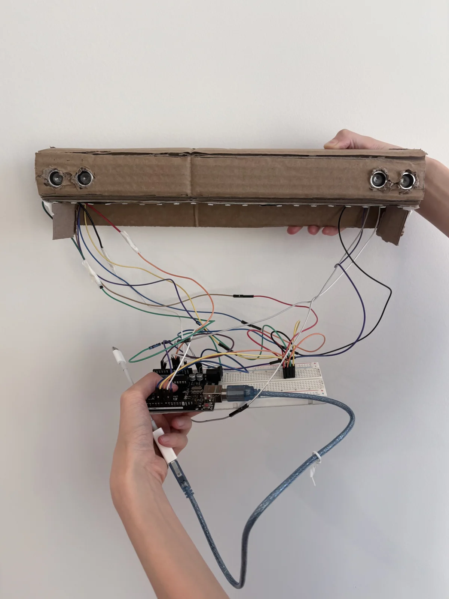

Feedback I’d like. On the light bar and the app.
Hardware

- Was anything awkward or hard to use?
- Could you tell your posture changed from the LED color?
- What do you think of the hardware design?
Software

- How was the onboarding?
- Was anything awkward in focus mode?
- Would the break games help you loosen up after work?
Market research. Finding the gap I could fill.
Competitors Posture tools and fixes
| Product | Notice early | A clear cue | No interruptions |
|---|---|---|---|
📳Upright GoA wearable that buzzes when you slouch | |||
📷NekozeA Mac app that watches through the webcam | |||
🎧Posture PalTracks your head through AirPods | |||
📱Apple Screen DistanceBlocks the iPhone screen when it’s too close | |||
🪑Ergonomic chairA common fix people buy | |||
🧘PT, Pilates, exerciseWhat people try first |
Comparators Other fields, the right idea
- Status without opening the app
 DoorDashOrder status on the lock screen
DoorDashOrder status on the lock screenArriving in Your Dasher is on the way
- Updates that wait for your glance
 UberYour ride’s ETA on the lock screen
UberYour ride’s ETA on the lock screenDriver awayGray sedan · 7KX 204
- Only speaks when something changes
 StarbucksLive Activity when your order is ready
StarbucksLive Activity when your order is readyPick up at the counter
- Glance mid-run, keep running
 Nike Run ClubYour run’s distance and pace on the lock screen
Nike Run ClubYour run’s distance and pace on the lock screenkm · /kmOutdoor run ·